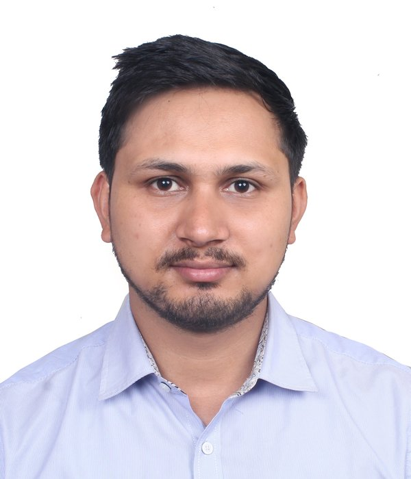
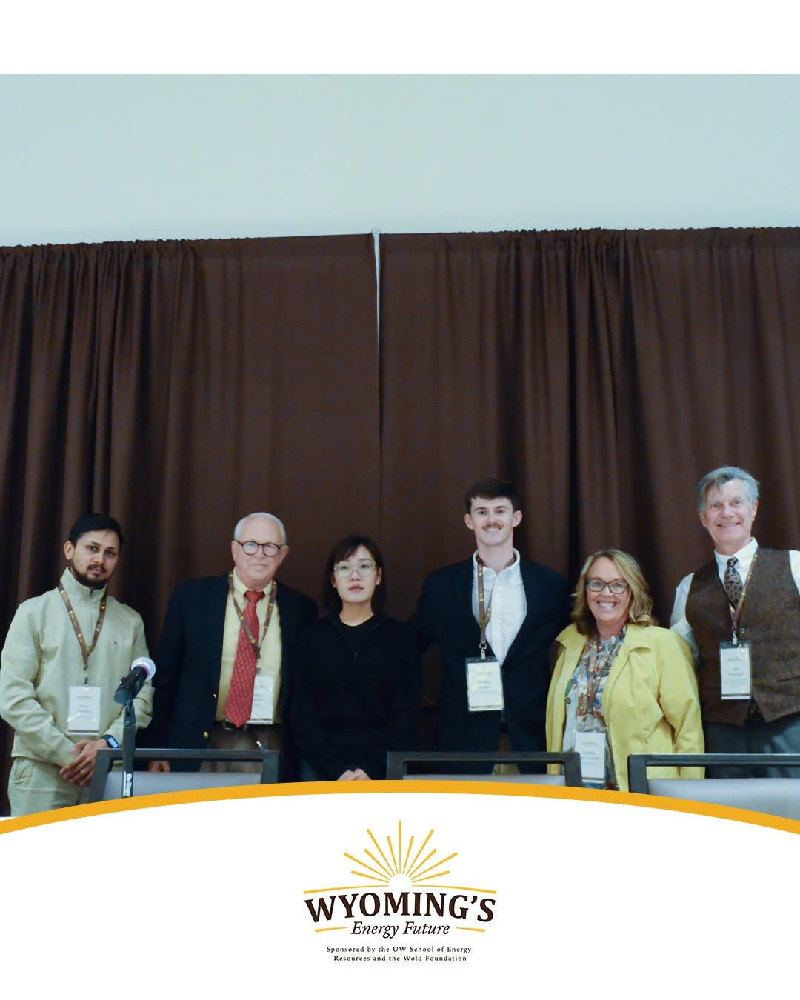

Ram Pandey
Ph.D. Candidate in Electrical Engineering
Department of Electrical Engineering & Computer Science, University of Wyoming
I study how to keep power systems reliable, frequency-secure and resilient as they come to depend on stochastic, low-inertia generation and variable loads. My work spans optimal and stochastic scheduling of microgrids, reliability assessment, frequency support from storage and electric vehicles, and machine-learning methods for power system analysis. In summer 2025 I worked as a research collaborator at Sandia National Laboratories.
Before coming to Wyoming, I spent nearly six years as an Assistant Professor at the Institute of Engineering, Tribhuvan University, Nepal, including two years as Head of the Electrical Engineering Department at Pashchimanchal Campus. I hold an M.E. in Electrical Power Engineering from Kathmandu University and a B.E. in Electrical Engineering from Tribhuvan University.
Research interests
Recent news
- Secured first position in the poster competition at the Wyoming Energy Symposium.

- Presenting a poster at the North American Power Symposium (NAPS 2026) on multi-phase, resilience-constrained stochastic scheduling of microgrids.
- Paper Scenario-Aware Scheduling in Microgrids: Look-Ahead Optimization with Frequency Security published at IEEE TPEC.
- Presented Electric Vehicle-Based Frequency Support in Low-Inertia Power Grids at IEEE ETFG, Wollongong, Australia.
- Received the School of Computing Graduate Fellowship (2025–2026), University of Wyoming.
- Research collaborator at Sandia National Laboratories, Albuquerque, NM.
- Two papers at NAPS 2025 and IEEE TPEC 2025 on frequency-secure scheduling and VSM-based microgrid reliability.
- Completed OPAL-RT training in RT-Lab and ePHASORSIM real-time simulation.
- Joined the University of Wyoming as a Ph.D. student and Graduate Research Assistant.
Contact
Dept. of Electrical Engineering & Computer Science
University of Wyoming
Laramie, WY 82071, USA
rpandey2@uwyo.edu
rampandey0505@gmail.com